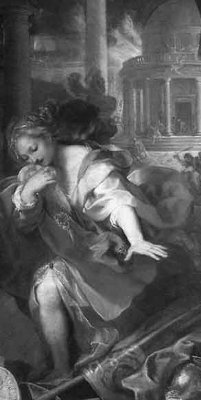

Çok güzel bir kızdı prenses Kreusa... Üstelik gösterişten uzak, kendi başına özgürce yaşamak, gönlünden geldiği gibi davranmak onun en göze çarpan özelliklerindendi... Zaten daha çocukluğundan beri en sevdiği şey; dağlarda bayırlarda gezip tozmak, kuşlarla hayvanlarla kendince konuşmaktı. Kendini tutamayıp dokunmadıkça, yırtıcı denen hayvanların çoğu ondan kaçma gereğini bile duymazlardı!.. Bu yüzden ormana her gidişinde, önüne çıkan hayvanlarla biraz yarenlik eder, sonra da yeni açmış rengârenk kır çiçeklerinden birkaçını saçlarına iliştirirdi. Biraz daha gezip dolaştıktan sonra evinin yolunu tutardı... Bu türden yaşamı uzun süre, ta ergenlik çağına dek sürüp gitti güzel Kreusa'nın.
Ergenlik çağına daha yeni girdiği sıralardaydı... Kreusa, gene küçük sepetinde derlediği kır zambaklarıyla, değişik kır çiçekleriyle evine dönüyordu. Birden çok yakışıklı ve daha önce hiç görmediği bir delikanlı çıkıverdi karşısına. Ne var ki tek söz bile söyleme gereği duymadan bu delikanlı, Kreusa'yı kucakladığı gibi doğruca bir mağaraya alıp götürdü. Artık ne yapsa elinden kurtulamayacağını sezinledi güzel kız. Çünkü tanrı Apollon'un ta kendisiydi bu yakışıklı delikanlı! Ve Güzel Kreusa, mağaradaki bu birlikteliklerinden sonra gebe kaldı... Haliyle ne kral olan babasına, ne de anası kraliçeye bir şey söyleyebildi başına gelenler konusunda... Ama o günden sonra da kırlarda bayırlarda, mağarada seviştiği o hoyrat delikanlıyı aradı hep... Karnı iyice şiştiğinde de artık saraya dönmek bir yana, böyle bir düşünce bile onun elini ayağını titretmeye başladı. Çünkü bu konuda çok sert töreler vardı!..
Doğum günü geldiğinde Kreusa, sevgilisi tanrı Apollon'la seviştiği mağaraya sığınıp nur topu gibi bir erkek çocuk getirdi dünyaya. Sonra da gebeliği sırasında geceleri yüreği titreye titreye nakışladığı rengârenk kundakla sarıp sarmaladı bebeğini. Uzun uzun öpüp kokladıktan sonra da onu orada bıraktı ve için için ağlayarak saraya döndü. Döndü ama sarayda da diken üstündeydi hep. Çünkü durmadan bebeğini düşünüyordu... Bir gün artık dayanamayıp çocuğunu bulma umuduyla doğruca mağaraya gitti. Ama ne bebeği, ne de ondan bir iz vardı ortalıkta!.. Yerde kan izleri filan da olmadığından, "bir kartal kaçırmıştır belki de" diye düşünüp kendince avunmaya çalıştı... Yeniden ve üzgün üzgün saraya döndü...

Kreusa
Bir süre sonra onu Ksutos (Ksuthos) adlı biriyle başgöz etti babası. Ne var ki pek mutlu yürümedi bu evliliği... Çünkü mağarada bırakıp kaçtığı bebeğini düşünüyordu hep... Törelerin zoruyla ona analık edememiş olmanın o anlatılmaz acısıyla yatıp kalkıyordu. Üstelik ne denli duygularını bastırsa da, gizli bir aşkla sevdiği tanrı Apollon'a, artık hiç ortalıklarda görünmediği için ilençler yağdırıyordu... Bir yandan da kocası Ksutos, habire çocuk istiyordu ondan!.. Bu istekleri bir türlü yerine gelmeyince, karı-koca kalkıp Delfoy'daki biliciye akıl danışmak üzere yola çıktılar. Delfoy'a varınca Ksutos biriyle görüşeceğini söyledi ve kentte kaldı. Karısı Kreusa da tek başına eski sevgilisi tanrı Apolon'un tapınağına gitti. Kapıda çok yakışıklı bir delikanlı karşıladı onu. Biraz hoşbeşten sonra ona neden böyle üzgün olduğunu sordu delikanlı... Soruyu başka bir soruyla geçiştirmek için; "Senin adın ne delikanlı?" dedi Kreusa; Delikanlı da hiç bekletmeden; "Adım İon," diye yanıtladı. "Kendimi bu tapınağa adadım. Buranın rahibesi Pithia bulup getirmiş beni. O zamandan beri annemin de babamın da kim olduğunu bilmiyorum!.."
Bu sözler büsbütün acısını kışkırttı Kreusa'nın. İç çeke çeke ağlamaya başladı. "Neden ağlıyorsun ki böyle?" diye sordu delikanlı yeniden. "Işık tanrısı Apollon'un tapınağında böyle ağlamak olmaz ki!" Artık büsbütün kendini tutamayan Kreusa; "Apollon mu dedin? Tanrıların en taş yüreklisidir o!" diye kükredi. Sonra da kesik kesik sürdürdü konuşmasını: "Çünkü benim en sevdiğim bir arkadaşım tanrı Apollon'dan gebe kalmış... Ama geçen zaman içinde ne onu, ne de çocuğunu arayıp sormuş! O da doğurduğu bebeğini kimselere kabul ettiremeyeceği için bir mağaraya bırakmış. Ama bir süre sonra onu almaya gittiğinde artık yerinde değilmiş!.. O zamandan beri hep bebeğini arıyor arkadaşım!.." Bunun üzerine İon; "Apollon öyle bir şey yapmaz! Bir yanlışlık olmalı!" dedi... "Nasıl yapmaz?" diye sözünü kesti Kreusa; "Kadın bana kaç kez yana yakıla anlattı bunu. Ben de o yüzden buraya geldim zaten!.." Delikanlı biraz sustu. Sonra da; "Öyle bile olsa tanrılara isyan edilmez..." diyebildi. Ardından ikisi de sustu...
Tam o anda Kreusa'nın kocası Ksutos geldi yanlarına. Durduğu yerde duramıyordu sevincinden... Delikanlıya baktı bir süre; "Senin adın İon değil mi?" diye sordu büyük bir rahatlıkla. "Evet efendim," diye yanıtladı, "İon'un ta kendisiyim!" Bunun üzerine büyük bir coşkuyla; "Oğlum benim!" diyerek kollarına aldı İon'u. "Tanrı Apollon'la konuştum. Sen benim oğlummuşsun!.." Duyduklarına bir anlam veremeyen ve aniden kıskançlığa kapılan Kreusa da; "Oğlum mu dedin? Bu da nereden çıktı? Peki annesi kim öyleyse?" diye sordu. Bunun üzerine kocası Ksutos; "Öz oğlum değil canım! Ne fark eder? Ama tanrı Apollon onu öz oğlum gibi sevmemi söyledi bana..." diye yanıtladı...
Haliyle Kreusa da, İon da şaşkındılar... Onları bir süredir uzaktan gizli gizli izleyen tapınağın başrahibesi girdi içeri... Elinde bezden bir bohça vardı. Bohçayı İon'un eline tutuştururken; "Bak bunun içindeki kundak senin!" dedi. "Anneni bulman için bir ipucu olabilir." Sonra da dışarı çıktı. İon bohçayı açıp kundağa baktı. Üstünde renk renk nakışlanmış desenler vardı... Kundağın en üstündeki büyükçe bir desende genç bir kız, bir eliyle topladığı rengârenk çiçeklerlerle dolu eteğini tutuyor, öteki eliyle de gözlerini ışıktan korumaya çalışıyordu. Kızın gözleri; her tarafını aniden saran ışık yağmurlarının sağanak sağanak boşandığı bir yere bakıyordu. Gözleri gülüyordu kızın... Belli ki ışık tanrısı Apollon vardı oralarda. Tam onun yanındaki desende de aynı genç kız, flüt çalan yakışıklı mı yakışıklı ve Apollon'a benzeyen bir delikanlının dizlerine başını yaslamış, gözleri kapalı onu dinliyordu...
Desenlere bir süre daha baktıktan sonra; "Artık dünyanın neresinde olursa olsun ben annemi arayıp bulacağım!" diye bağırdı İon... Karşıdan baktığı kundakta bir şeyleri tanır gibi olan Kreusa, hemen kundağı kapıp aldı İo'nun elinden! Desenleri görür görmez de; "Oğlum benim!" diye İon'un boynuna sarıldı...
"Siz ikiniz de delisiniz!" dedi İon. "Hayır oğlum," diye karşı çıktı Kreusa. "Demin sözünü ettiğim kadının ta kendisiyim ben! İstersen kundağın ucundaki sargıyı aç. Orada küçük bir yılan var!"
Kreusa'nın dediği doğruydu. Sonra da Kreusa, oğlu ve kocası, birbirleriyle sarmaş dolaş olup tapınaktan ayrıldılar...
Üçü de uzun yıllar mutlu bir yaşam sürdüler...
Tanrı Apollon bir daha hiç çıkmadı karşılarına...